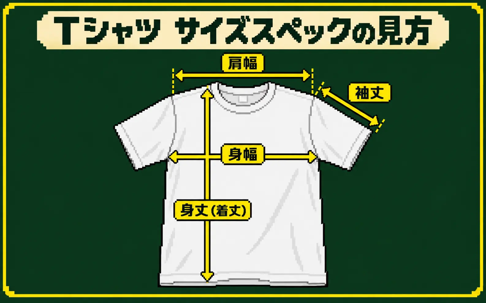

結論：サイズ名ではなく実寸を比べます
Tシャツのサイズ感を知りたいときは、ボディメーカーのサイズ表にある身幅・身丈（着丈）・肩幅・袖丈を確認し、手元にある着やすいTシャツを同じ方法で測って比べるのが近道です。
いちばん確実なのはサンプルを取り寄せて試着することですが、サンプル代・送料・確認時間が必要です。まず実寸を比べれば、候補を絞ってから必要なときだけサンプルを確認できます。

「普段はL」だけで決めず、まず身幅を比べよう。次に身丈と肩幅を見ると、ゆとりとシルエットを想像しやすいよ。
同じ「Lサイズ」でも大きさは違います
Tシャツには、定番型、細身、ドライ、厚手、ビッグシルエット、レディースなど多くの形があります。同じメーカーでも品番が違えば実寸は変わり、メーカーが変わればサイズの基準も同じとは限りません。
そのため「いつもLだから今回もL」ではなく、注文する品番のサイズスペック表を見る必要があります。サイズ名は候補を探す入口、最後の判断は実寸と考えると分かりやすくなります。
身幅・身丈・肩幅・袖丈はどこ？

身幅
左右の脇の付け根付近を結ぶ横幅です。胴まわりのゆとりを想像しやすい数字で、サイズ選びでは最初に確認します。
身丈・着丈
首元付近から裾までの長さです。長いほど裾が下へ来ますが、測定の起点はメーカーごとに確認します。
肩幅
左右の肩先、または肩の縫い目の間です。広いと肩が落ちやすく、狭いと体に沿った印象になりやすい項目です。
袖丈
肩先から袖口までの長さです。半袖でも数cm違うと、腕の見え方や全体のバランスが変わります。
手持ちのTシャツと比較する4ステップ
普段着ていて「このサイズ感がちょうどいい」と感じるTシャツを1枚用意します。体そのものを測るより、着用感を知っている衣類を比較した方が完成イメージにつなげやすくなります。
平らな場所に置く
床や大きな机に置き、前身頃と後身頃のねじれを整えます。
シワを軽く伸ばす
引っ張って生地を伸ばさず、自然に平らになるよう整えます。
4か所を測る
身幅・身丈・肩幅・袖丈を、候補商品の採寸図と同じ位置で測ります。
サイズ表と並べる
差をcmで書き出し、どこを近づけたいか、どこなら差を許容できるか判断します。
| 確認項目 | 手持ちのTシャツ | 候補商品 | 予想できること |
|---|---|---|---|
| 身幅 | 52cm | 52cm | 胴まわりのゆとりは近い |
| 身丈 | 68cm | 71cm | 候補の裾が約3cm長い |
| 肩幅 | 46cm | 49cm | 候補は肩が少し落ちやすい |
| 袖丈 | 20cm | 22cm | 候補の袖口が少し下へ来る |
上の数値は比較方法を説明する例です。実際は注文する品番の公式サイズ表を使用してください。
「身丈」と「着丈」は同じ？
どちらも首元から裾までの縦方向の長さを表す言葉として使われます。ただし、襟を含めるか、後ろ襟の中央から測るか、肩の一番高い位置から測るかなど、メーカーや販売店によって測定方法が異なる場合があります。
名前だけを見て同じ数字として比べず、各商品ページの「サイズの測り方」を確認してください。同じ測定基準で比べることが重要です。
サイズ表を比較するときの注意点
サンプルを見た方がよいケース
サイズ表で候補はかなり絞れますが、数字だけでは生地の手触りや透け感、首まわりの感覚までは判断できません。次の場合はサンプル確認も検討します。
- チームやスタッフ用にまとまった枚数を注文する
- フィット感を特に重視したい
- 生地の厚さ・透け感・手触りも確かめたい
- 普段と大きく違うビッグシルエットや細身ボディを選ぶ
- 販売用や撮影用の商品として使用する
最初から全サイズのサンプルを送るのではなく、サイズ表で候補を絞ってから確認すると、費用と時間を抑えやすくなります。
Tシャツサイズでプリントの見え方も変わります
同じ横幅20cmのデザインでも、Sサイズでは大きく、XLサイズでは小さく見えることがあります。サイズが混在する注文では、最小サイズにデザインが収まるかを先に確認し、大きいサイズで余白が増えても問題ないか完成イメージを見ます。
プリント自体の大きさと位置は、Tシャツのプリントサイズと位置の決め方で詳しく解説しています。デザインをスマホで準備する場合は、CanvaでTシャツ用データを作る7ステップも参考にしてください。
注文前のサイズ確認
注文する品番の公式サイズ表を見た別メーカーや別品番の表を混ぜず、実際に注文する商品で確認します。
手持ちのTシャツを平置きで測った着やすい1枚を選び、引っ張らずに測ります。
身幅だけでなく4項目を比較した身幅・身丈・肩幅・袖丈を並べ、差を確認します。
用途と着こなしを決めた普段着、部活、作業着、販売用など、求めるゆとりを整理します。
必要ならサンプル確認を相談した大量注文や販売用では、数字だけで決めず現物確認も検討します。
Tシャツのサイズ表でよくある質問
Tシャツの身幅はどこを測りますか？
Tシャツを平置きし、左右の脇の付け根付近を直線で測ります。メーカーによって「脇の1cm下」など基準が異なる場合があるため、公式の採寸図も確認してください。
身丈と着丈は同じですか？
どちらも首元から裾までの縦の長さを示しますが、測り始める場所や襟を含むかが異なる場合があります。名称だけでなく測定図を見て比べます。
胸囲と身幅は同じですか？
同じではありません。身幅は平置きした衣類の片面の幅です。身幅の約2倍が衣類の一周の目安になりますが、厚みや伸縮性もあるため体の胸囲と単純には一致しません。
手持ちのTシャツと身幅が同じなら同じサイズ感ですか？
胴まわりのゆとりは近いと予想できますが、肩幅・身丈・袖丈・生地の厚さ・伸縮性も着用感に影響します。4項目をまとめて比較してください。
サイズ表を見ても迷う場合はどうすればよいですか？
手持ちTシャツの実寸、身長、普段のサイズ、希望する着こなしをプリント店へ伝えてください。候補を絞ったうえで、必要ならサンプル確認を相談できます。
確認した公式資料
サイズや測定方法は商品ごとに異なるため、注文時は各メーカーの最新情報をご確認ください。Printstar 00085-CVT公式商品情報／United Athle 5001-01公式商品情報／United Athleサイズ別モデル着用写真
MISSION COMPLETE!
サイズ選びも一緒に考えます
普段着ているTシャツの実寸や、希望する着こなしを教えてください。サイズ表で判断できそうか、サンプルを確認した方がよいかも含めてご案内します。
無料見積もりへ ▶裏公式LINEで相談する▶実際のサイズ相談とウェアプリント制作経験、ボディメーカーの公式サイズ情報をもとに確認しています。最終更新：2026年9月28日 運営者・編集方針